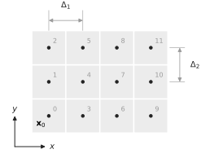
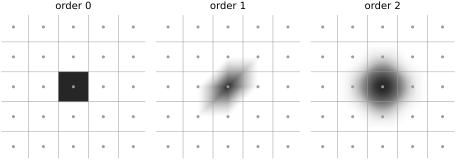
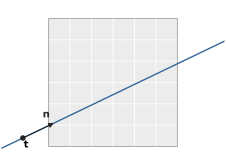
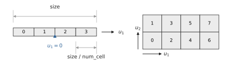
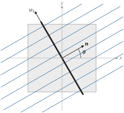
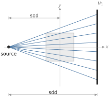
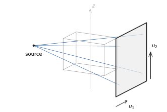

Geometry¶
Conventions shared by all operators, and the standard scans.
Volume¶

A 2D lattice with num = (4, 3): knots (dots), and the index of each coefficient in the flat
array (grey).¶
UniformSpec defines the knots \(\bbx_{\bbq} = \bbx_{0} + \bbq \odot \bbDelta\), with start \(= \bbx_{0}\), step \(= \bbDelta\) and num \(= \bbQ\).
At order 0, each knot is the centre of its voxel.
A volume is the flat C-ordered array of its coefficients \(f_{\bbq}\), indexed \((x, y[, z])\): the last axis is the fastest.
A NumPy array f of shape num is passed as f.ravel().
The standard scans rotate about the origin: center the lattice on it with UniformSpec.centered().
Basis functions¶

The 2D basis functions \(\psi\) on the lattice.¶
order selects \(\psi\): voxels (0), or smoother splines (1, 2).
In 2D they are box splines, in 3D tensor-product B-splines (see xrt_apply()).
Every \(\psi\) has unit integral: \(f_{\bbq}\) is the mass of \(f\) around \(\bbx_{\bbq}\), and \(f_{\bbq} / (\Delta_{1} \cdots \Delta_{D})\) its density.
Rays¶

A ray: anchor \(\bbt\) and direction \(\bbn\).¶
xrt_apply() integrates \(f\) along the whole line \(\{\bbt + \alpha \bbn : \alpha \in \bR\}\), by arc length:
the anchor can be anywhere on the line, inside or outside the volume;
the direction can have any non-zero length.
Rays are passed as two (D, L) arrays, one column per ray:
import drjit as dr, numpy as np
from drjit.cuda import Array2f, Float
import xrt_toolkit as xtk
t = Array2f(t_x, t_y) # (2, L) anchors
n = Array2f(n_x, n_y) # (2, L) directions
y = xtk.xrt_apply((t, n), knot_spec, order, Float(f.ravel()))
Detector¶

Left: a 1D detector with num_cell = 4. Right: a 2D detector with num_cell = (4, 2), and
the order of its cells in the projections.¶
DetectorSpec gives the full size of the detector (not its pitch) and its num_cell.
Cells are centred: cell \(i\) of \(N\) sits at \(u = (i - (N - 1) / 2) \, \text{size} / N\).
With an even num_cell, \(u = 0\) falls between two cells.
Parallel beam¶

View \(\theta\) of parallel_beam().¶
View \(\theta\) has rays along \(\bbn = (\cos\theta, \sin\theta[, 0])\). Its detector passes through the origin, with \(u_{1}\) along \((-\sin\theta, \cos\theta[, 0])\) and, in 3D, \(u_{2}\) along \(z\), the rotation axis. Angles cover \([0, \pi)\): view \(\theta + \pi\) sees the same lines as view \(\theta\).
knot_spec = xtk.UniformSpec.centered(step=1, num=(N, N, N))
det = xtk.util.DetectorSpec(size=(1.5 * N, N), num_cell=(192, 128))
angles = dr.linspace(Float, 0, np.pi, 180, endpoint=False)
rays = xtk.parallel_beam(angles, det)
y = xtk.xrt_struct_apply(rays, knot_spec, order, Float(f.ravel()))
Cone beam¶

View \(\theta = 0\) of cone_beam().¶

The same view in 3D.¶
The source sits at \(-\text{sod} \, (\cos\theta, \sin\theta[, 0])\).
The detector faces it at distance sdd, with \(u_{1}\) and \(u_{2}\) as in parallel beam.
It must cover the volume magnified by \(\text{sdd} / \text{sod}\).
Angles cover \([0, 2\pi)\): views \(\theta\) and \(\theta + \pi\) see different lines.
det = xtk.util.DetectorSpec(size=(2.5 * N, 2.5 * N), num_cell=(256, 256))
angles = dr.linspace(Float, 0, 2 * np.pi, 360, endpoint=False)
rays = xtk.cone_beam(sod=2 * N, sdd=3 * N, angles=angles, detector_spec=det)
Projection layout¶
The structured operators order their projections (view, u1[, u2]), the last axis fastest: y reshapes to (len(angles), *num_cell).
struct_rays() returns the same rays, in the same order.
Units¶
All lengths share one unit: knot_spec, DetectorSpec.size, sod, sdd and the rays.
Work in voxel units (step = 1):
coefficients and densities coincide;
in float32, other units lose accuracy (up to a few % at
step = 0.0025).
For a scan in millimetres with voxel size \(s\), divide all lengths by \(s\).